Hi, I’m Anastasia Chernikova, a communication designer based in Yerevan. I create identities, editorial and print projects, with a particular interest in what happens when design leaves the screen and enters physical space — on paper, across a wall, or inside an exhibition.
I work with cultural institutions, restaurants and festivals, developing ideas from concept through production. I approach each project by first understanding the people, context and environment around it, then finding a visual form that can genuinely work within them.
Привет, я Анастасия Черникова — коммуникационный дизайнер из Еревана. Я разрабатываю айдентику, редакционные и печатные проекты. Особенно меня интересует, что происходит с дизайном, когда он выходит за пределы экрана и становится частью физической среды — появляется на бумаге, стене или в выставочном пространстве.
Я работаю с культурными институциями, ресторанами и фестивалями, сопровождая идеи от концепции до производства. Каждый проект я начинаю с изучения людей, контекста и среды, а затем ищу визуальную форму, которая сможет органично в них существовать.
Information DesignSpatial DesignInstallation Design
Проект календаря, в котором повторяющаяся структура дней отражает монотонность времени и изменчивость повседневности.
A calendar project exploring the rhythm of time through a repeating structure of days, reflecting both monotony and the shifting nature of everyday life.
«Следуй за мной» — карманная книга-исследование о художественном методе Софи Каль и о том, как чужая жизнь превращается в рассказ. Каль собирает портреты людей по косвенным свидетельствам: оставленным вещам, маршрутам по городу, фотографиям, воспоминаниям и словам посторонних. Человек возникает не как цельный образ, а как совокупность следов, отобранных и соединённых наблюдателем.
"Follow Me" is a pocket-sized research book exploring Sophie Calle’s artistic practice and the ways in which another person’s life can be shaped into a narrative. Calle constructs portraits through indirect evidence: belongings left behind, routes through the city, photographs, memories, and other people’s accounts. Rather than appearing as a complete image, each person emerges as a collection of traces selected and assembled by an observer.
Меня интересовало, почему эти истории воспринимаются как документальные, хотя их убедительность создаётся художественными средствами. За этой объективностью всегда присутствует автор: именно Каль решает, за кем следовать, что зафиксировать и какая часть чужой жизни станет видимой.
Поэтому книга посвящена не только людям, за которыми наблюдает художница. Она исследует сам взгляд, собирающий их истории, и границу, за которой любопытство превращается в метод, а документирование — во вмешательство.
Книга выполнена в компактном формате и помещается в карман пальто. Её можно незаметно достать, быстро закрыть или спрятать. Она напоминает найденное досье, записную книжку или бульварную хронику.
I was interested in why these stories feel documentary, even though their credibility is constructed through artistic means. Behind their apparent objectivity, the author is always present: Calle decides whom to follow, what to record, and which parts of another person’s life will be made visible.
The book therefore focuses on more than the people Calle observes. It examines the gaze that gathers and shapes their stories, as well as the point at which curiosity becomes a method and documentation turns into intrusion.
Designed in a compact format, the book fits inside a coat pocket. It can be discreetly taken out, quickly closed, or slipped out of sight. Its form recalls a found dossier, a private notebook, or a piece of tabloid reporting.
Визуальный язык
Структура книги соединяет два голоса. Первый складывается из записей Софи Каль и позволяет приблизиться к логике её наблюдения. Второй анализирует увиденное, ставит под сомнение нейтральность этого метода и предлагает другой взгляд на происходящее. Читатель перемещается между свидетельством и интерпретацией, постепенно осознавая, что документ никогда не существует отдельно от того, кто его создаёт.
Visual Language
The book’s structure brings together two voices. The first emerges through Sophie Calle’s own notes, drawing the reader closer to the logic of her observations. The second analyzes what has been documented, questions the neutrality of her method, and offers an alternative perspective on the events.
Moving between evidence and interpretation, the reader gradually comes to understand that a document can never be separated from the person who creates it.
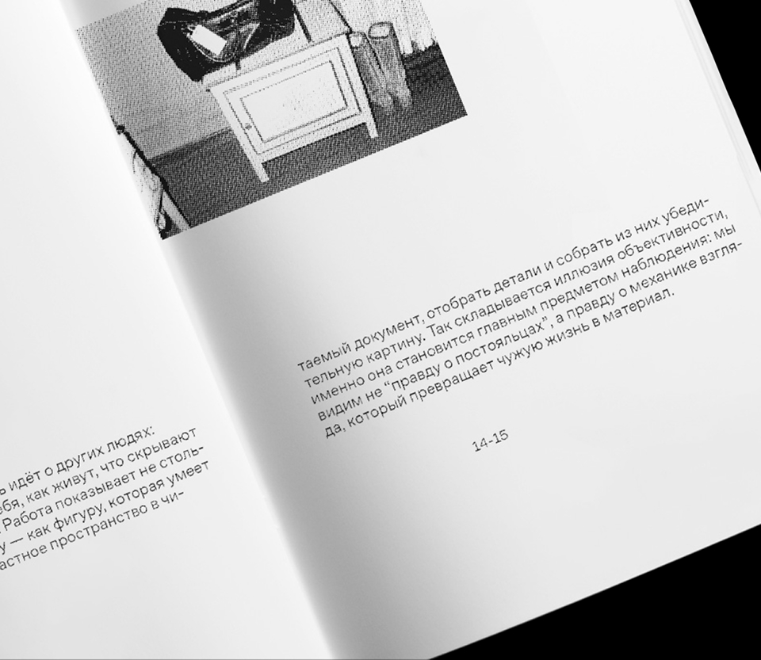
След читателя
В нижней части каждой страницы оставлена свободная полоса. У этого решения есть практическая функция: благодаря пустому полю небольшую книгу удобно держать, не закрывая пальцами текст и изображения.
Но со временем эта зона начинает выполнять другую роль. На ней остаются прикосновения, потёртости и следы рук человека, который читает книгу. К следам героев и самой Софи Каль добавляется присутствие нового наблюдателя.
Читатель больше не находится за пределами истории. Держа книгу в руках, он буквально вторгается в чужую жизнь и оставляет на ней собственный отпечаток.
The Reader’s Trace
A blank strip runs along the bottom of every page. The decision serves a practical purpose: it allows the small book to be held comfortably without the reader’s fingers covering the text or images.
Over time, however, this space takes on another role. It collects fingerprints, scuffs, and marks left by the person handling the book. The traces of its subjects and Sophie Calle herself are joined by the presence of a new observer.
The reader no longer stands outside the story. By holding the book, they physically enter another person’s life and leave their own trace behind.
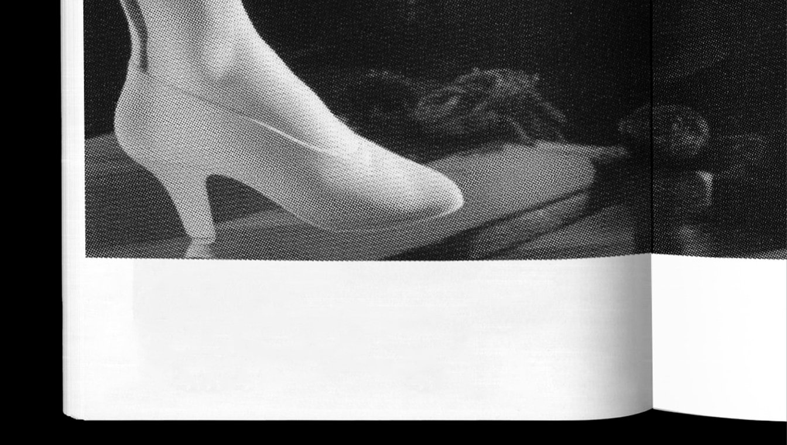
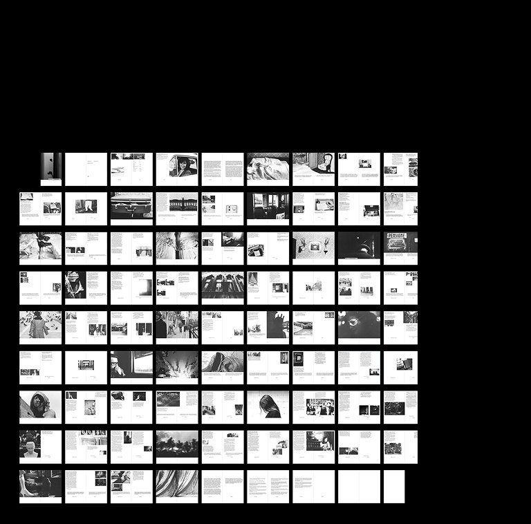
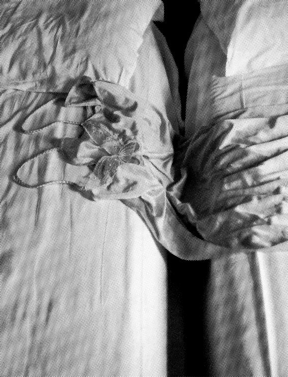
Издание не предлагает окончательной оценки метода Софи Каль. Оно помещает читателя внутрь той же этической ситуации: чтобы приблизиться к другому человеку, приходится смотреть, отбирать, интерпретировать — и неизбежно оставлять след собственного присутствия.
The publication offers no definitive judgment on Sophie Calle’s method. Instead, it places the reader within the same ethical tension: to draw closer to another person, we must observe, select, and interpret—and inevitably leave a trace of our own presence.
Календарь представляет год как равномерную сетку повторяющихся дней, подчёркивая визуальную монотонность и одинаковость ритма. Вертикальные полосы добавляют движение, указывая на изменчивость и нестабильность повседневности. Несмотря на одинаковую структуру, каждый день подвержен динамике внешних обстоятельств.
The calendar represents the year as a uniform grid of repeating days, emphasizing visual monotony and the sameness of rhythm. The vertical strips introduce movement, pointing to the unpredictability and instability of everyday life. Despite this identical structure, each day remains subject to the dynamics of external circumstances.
Календарь превращает год в упорядоченную последовательность равных единиц. Каждый день получает одинаковую ширину, структуру и место в системе, создавая ощущение предсказуемого, почти механического ритма.
В пространстве эта строгая сетка теряет устойчивость. Вертикальные ленты различаются по длине, движутся от воздуха и реагируют на присутствие человека. Цветовые переходы размывают границы между периодами, показывая, как постепенно меняется наше восприятие времени.
The calendar turns the year into an ordered sequence of equal units. Every day is given the same width, structure, and place within the system, creating a predictable, almost mechanical rhythm.
Once brought into physical space, this rigid grid begins to lose its stability. The vertical strips vary in length, move with the air, and respond to the presence of people. Gradual shifts in color blur the boundaries between periods, reflecting how our perception of time changes almost imperceptibly.
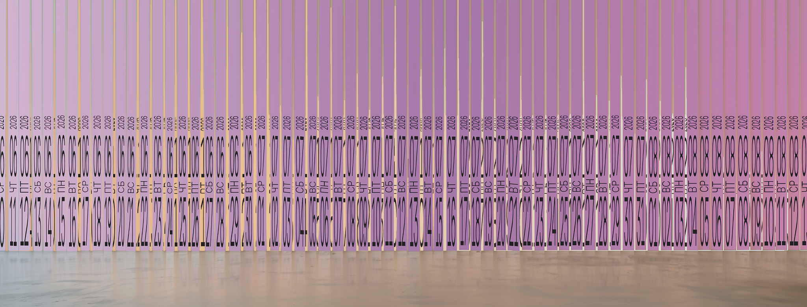
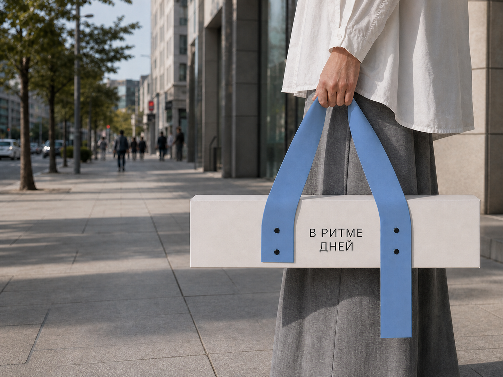
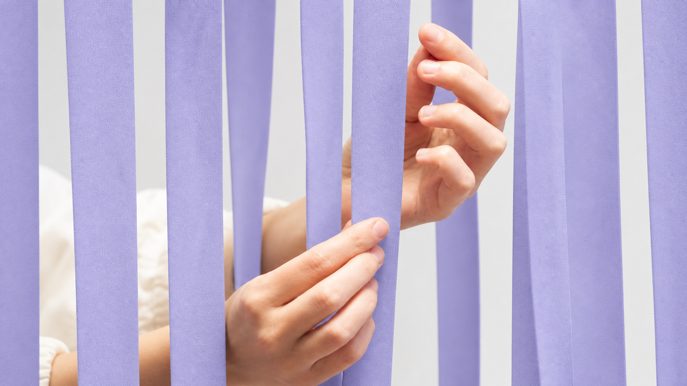
Календарь перестаёт быть плоским инструментом учёта и становится физической средой. Сквозь неё можно пройти, к ней можно прикоснуться, её фрагмент можно носить на себе. Несмотря на одинаковое устройство дней, каждый из них меняется под воздействием внешних обстоятельств, личного опыта и случайных событий.
The calendar is no longer a flat tool for measuring time; it becomes an environment. You can walk through it, touch it, and carry a fragment of it with you. Although every day follows the same structure, each is reshaped by circumstance, personal experience, and chance.
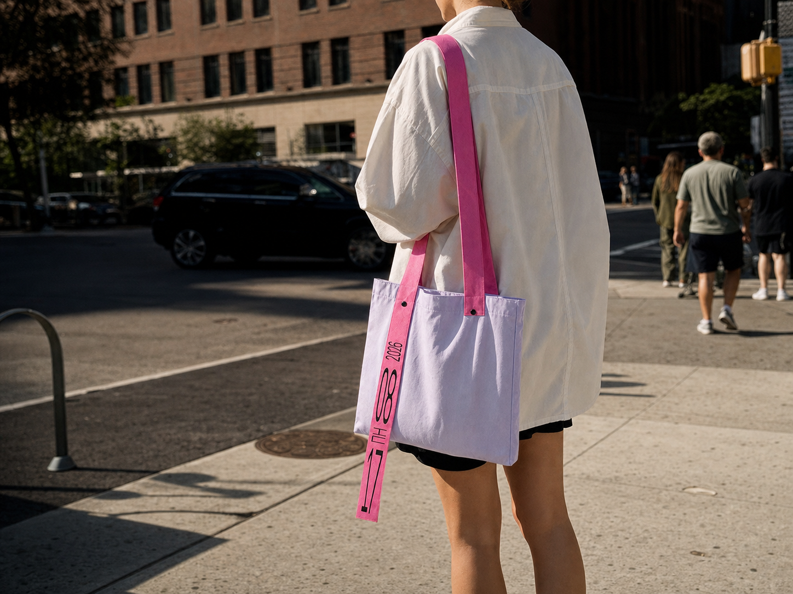
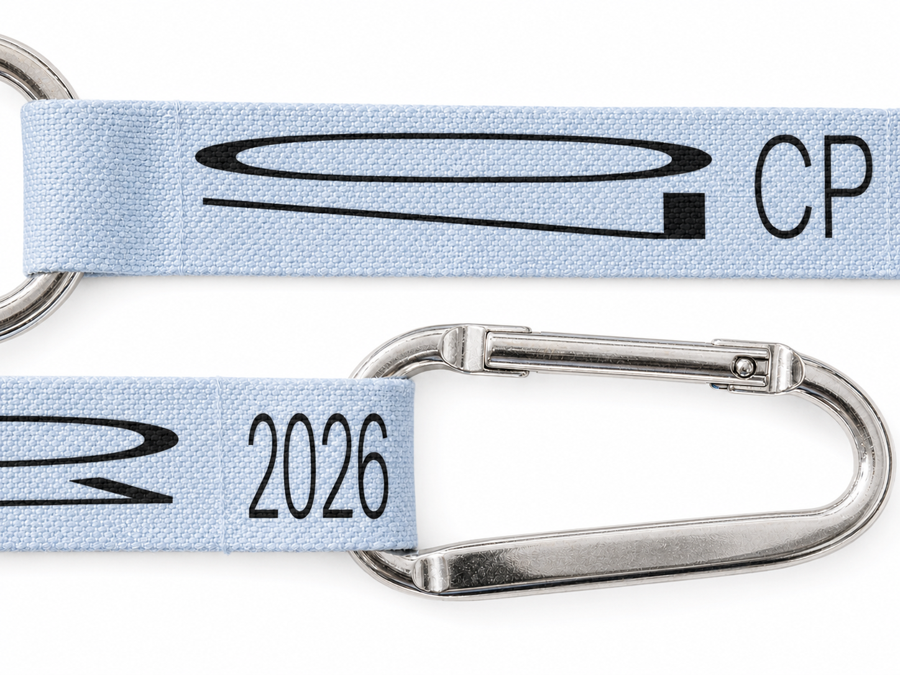
Проект исследует противоречие между календарным и проживаемым временем: система повторяется, но ни один день не ощущается в точности как предыдущий.
The project explores the tension between calendar time and lived experience: the system repeats, yet no two days ever feel exactly the same.
[HAI] TALK — концепция городского медиа, которое рассказывает о Ереване через личные наблюдения его жителей. Вместо единого авторитетного голоса проект собирает множество взглядов: профессиональных и бытовых, исторических и современных, местных и недавно появившихся. Ереван невозможно свести к одной истории. Для человека, выросшего здесь, репатрианта, иностранного студента или недавнего релоканта это разные города, существующие одновременно в одних и тех же улицах.
[HAI] TALK is a concept for an urban media platform that tells the story of Yerevan through the personal observations of its residents. Rather than relying on a single authoritative voice, the project brings together multiple perspectives: professional and everyday, historical and contemporary, long-established and newly arrived. Yerevan cannot be reduced to a single story. To someone who grew up here, a repatriate, an international student, or a recent arrival, it is a different city—several Yerevans coexisting within the same streets.
Сегодня в Ереване живут люди с принципиально разным опытом: коренные жители, армяне из диаспоры, репатрианты, релоканты и иностранцы. Они пользуются одной городской инфраструктурой, но по-разному воспринимают её историю, архитектуру, повседневные ритуалы и темп жизни.
Большинство материалов о городе предлагает уже готовую оптику. Туристические путеводители собирают достопримечательности, новостные медиа фиксируют события, а экспертные публикации объясняют историю и архитектуру. За этими форматами часто остаётся незаметным повседневное знание — субъективное, негромкое и связанное с личным опытом.
Именно этот слой стал основой проекта.
Context
Yerevan is home to people with fundamentally different lived experiences: lifelong residents, members of the Armenian diaspora, repatriates, recent arrivals, and international communities. They share the same urban infrastructure, yet experience its history, architecture, everyday rituals, and pace of life in very different ways.
Most content about the city comes with a ready-made perspective. Travel guides catalogue landmarks, news outlets document events, and expert publications interpret its history and architecture. What often remains unseen is everyday knowledge—subjective, understated, and rooted in personal experience.
This overlooked layer became the foundation of the project.
Проблема
Как рассказать о городе, не сводя его к единой версии?
Задача состояла в том, чтобы разработать медиа, где различия между взглядами не сглаживаются, а становятся главным редакционным принципом. Экспертное знание должно было существовать на равных с личной памятью, повседневной привычкой и случайным наблюдением.
The Challenge
How can a city be portrayed without reducing it to a single version?
The challenge was to create a media platform where differences in perspective would not be smoothed over, but become the central editorial principle. Expert knowledge needed to stand on equal ground with personal memory, everyday habits, and chance observations.
Название
[HAI] TALK строится на встрече локального и универсального. HAI отсылает к армянской идентичности и одновременно звучит как начало разговора — короткое приветствие, после которого может последовать вопрос.
Квадратные скобки выделяют HAI как отдельный голос внутри названия. Они напоминают элемент транскрипции и поддерживает идею медиа, которое фиксирует живую речь.
The Name
[HAI] TALK brings the local and the universal together. HAI refers to Armenian identity while also sounding like the beginning of a conversation—a brief “hi” that opens the door to a question.
The square brackets frame HAI as a distinct voice within the name. Resembling phonetic transcription, they reinforce the idea of a media platform built around capturing speech as it is spoken.
В основе [HAI] TALK лежит формат «одна тема — много взглядов».
Каждый выпуск посвящён одному месту, маршруту или городскому явлению. Редакция передаёт тему нескольким героям с разным опытом и просит каждого рассказать только о том, что замечает именно он.
Например, прогулка по проспекту Маштоца может быть собрана из наблюдений: - архитектора, читающего историю города по фасадам; - релоканта, который видит знакомое место впервые; - продавца или местного жителя, хранящего личные воспоминания о районе.
Задача медиа — не определить, чей взгляд точнее. Каждый голос открывает слой города, недоступный остальным.
At the heart of [HAI] TALK is a simple format: one subject, many perspectives.
Each edition focuses on a single place, route, or aspect of urban life. The editorial team invites several people with different backgrounds to respond to the same subject, asking each of them to share what they notice from their particular point of view.
A walk along Mashtots Avenue, for example, might bring together the observations of: - an architect who reads the city’s history through its façades; - a recent arrival seeing a familiar place with fresh eyes; - a shopkeeper or longtime resident carrying personal memories of the neighborhood.
The role of the platform is not to decide which perspective is the most accurate. Each voice reveals a layer of the city that remains invisible to the others.
Формат
Основой проекта становится лонгрид-мозаика: несколько коротких монологов, объединённых одной темой. Это не классическое интервью с вопросами и ответами, а серия самостоятельных высказываний, которые читатель сопоставляет между собой.
Каждый материал представляет героя через имя, возраст и его связь с городом: профессию, занятие или жизненный опыт.
Текст остаётся главным форматом медиа. Он позволяет сохранить нюансы речи, собрать доступный для поиска городской архив и адаптировать материалы для многоязычной аудитории.
Format
The project is built around a mosaic-style long-form format: a collection of short monologues connected by a shared theme. Rather than following a traditional question-and-answer structure, each piece brings together independent accounts that readers are invited to compare and interpret.
Every contributor is introduced through their name, age, and relationship to the city—whether defined by their profession, daily practice, or lived experience.
Text remains the platform’s primary medium. It preserves the nuances of each person’s voice, creates a searchable archive of urban life, and allows stories to be adapted for a multilingual audience.
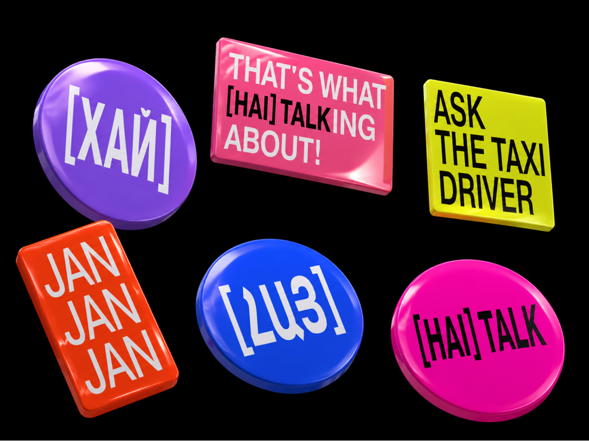
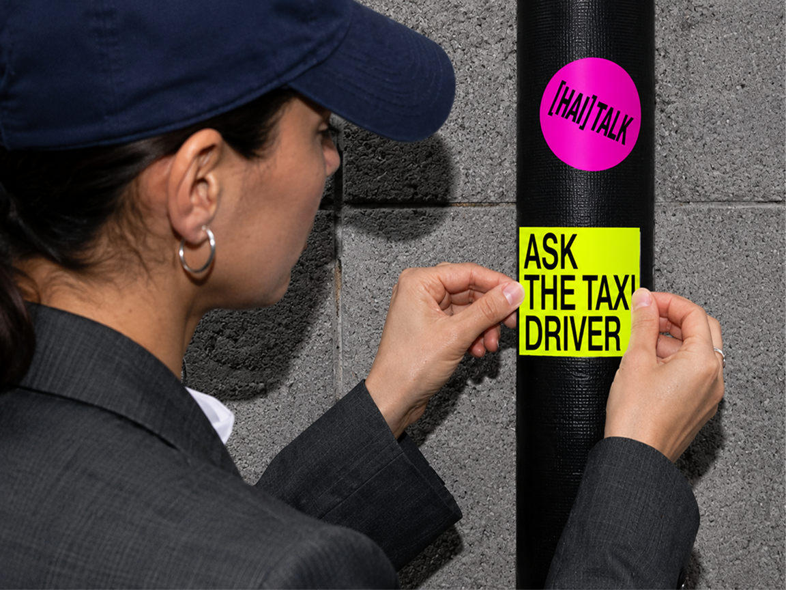
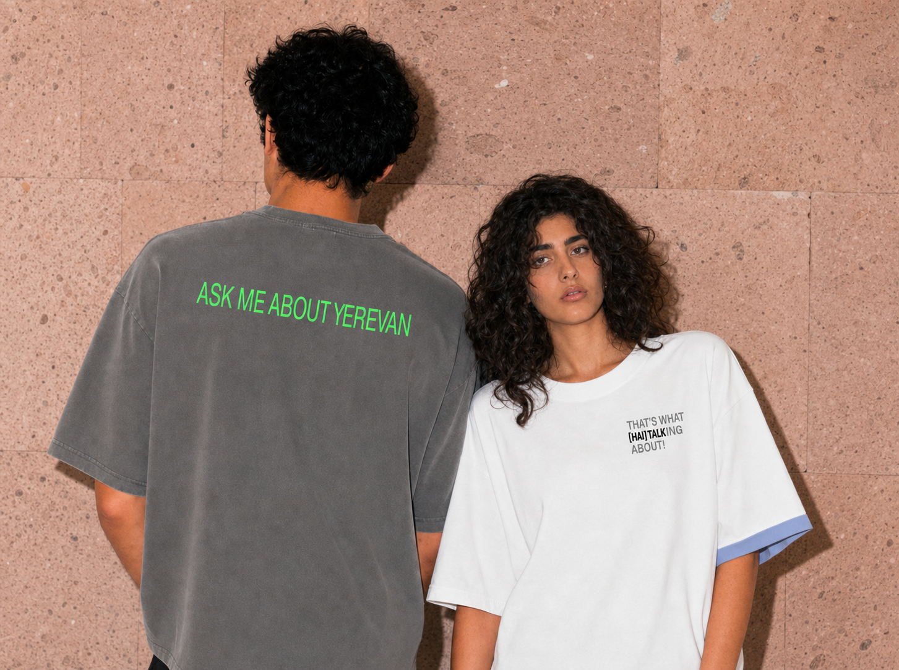
Медиа в городской среде
[HAI] TALK не ограничивается сайтом и социальными сетями. Айдентика переносится на вещи, которые могут существовать внутри повседневной жизни Еревана: футболки, брелоки, стикеры, значки, подставки и упаковку.
На подставках появляются короткие истории, услышанные от работников заведений. На брелоках и стикерах — вопросы и фразы, способные запустить случайный диалог. Даже букет или предмет одежды может стать носителем городской истории.
Так медиа возвращается туда, откуда берёт материал: на улицы, рынки, в кафе и разговоры между людьми.
Media in the Urban Environment
[HAI] TALK extends beyond its website and social platforms. The identity moves into objects that belong to everyday life in Yerevan: T-shirts, keychains, stickers, badges, coasters, and packaging.
Coasters carry short stories overheard from the people working in local venues. Keychains and stickers feature questions and phrases designed to spark spontaneous conversations. Even a bouquet or an item of clothing can become a carrier of the city’s stories.
In this way, the media platform returns to the places where its material originates: the streets, markets, cafés, and conversations between people.
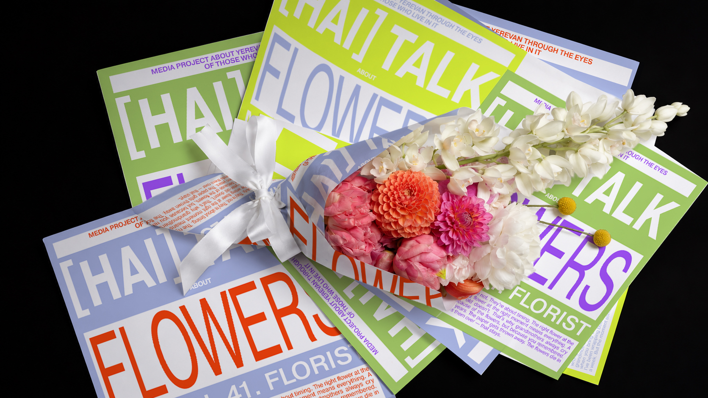
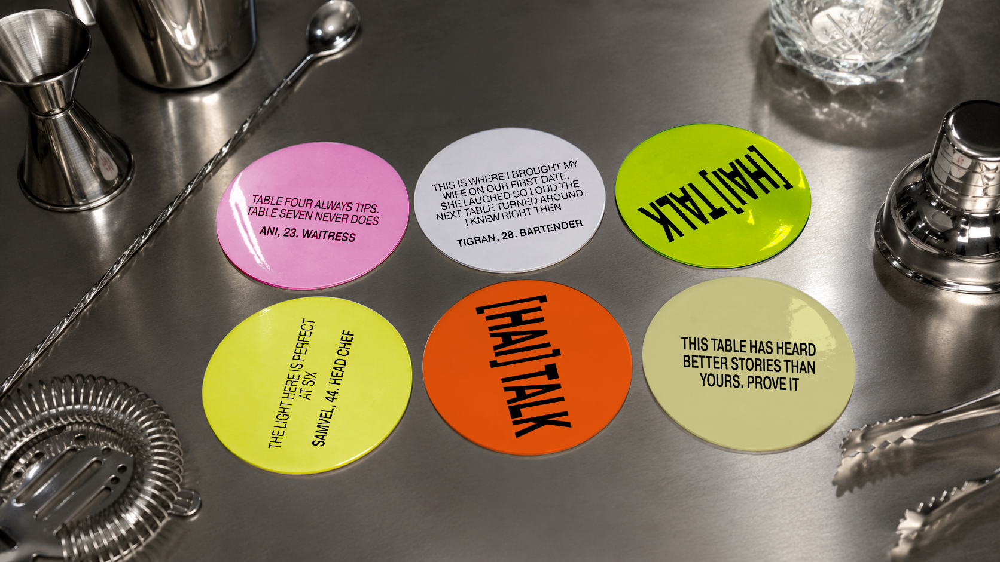
Масштабирование
Редакционный принцип позволяет развивать проект вокруг любых тем: - районы, улицы и отдельные здания; - жара, первый снег, пробки и сезонные переезды; - рынки, дворы, общественный транспорт и ночная жизнь; - городские праздники и повседневные ритуалы; - изменения архитектуры, снос и новое строительство; - музыка, еда, ремесло и локальные сообщества.
Медиа может существовать как самостоятельная редакция, ограниченная сезонная серия или открытая платформа для горожан.
Scalability
The editorial framework allows the project to expand across a wide range of subjects: - neighborhoods, streets, and individual buildings; - summer heat, the first snow, traffic, and seasonal movement; - markets, courtyards, public transport, and nightlife; - city celebrations and everyday rituals; - architectural change, demolition, and new development; - music, food, craft, and local communities.
The platform can evolve into an independent publication, a limited seasonal series, or an open platform where residents contribute their own perspectives on the city.
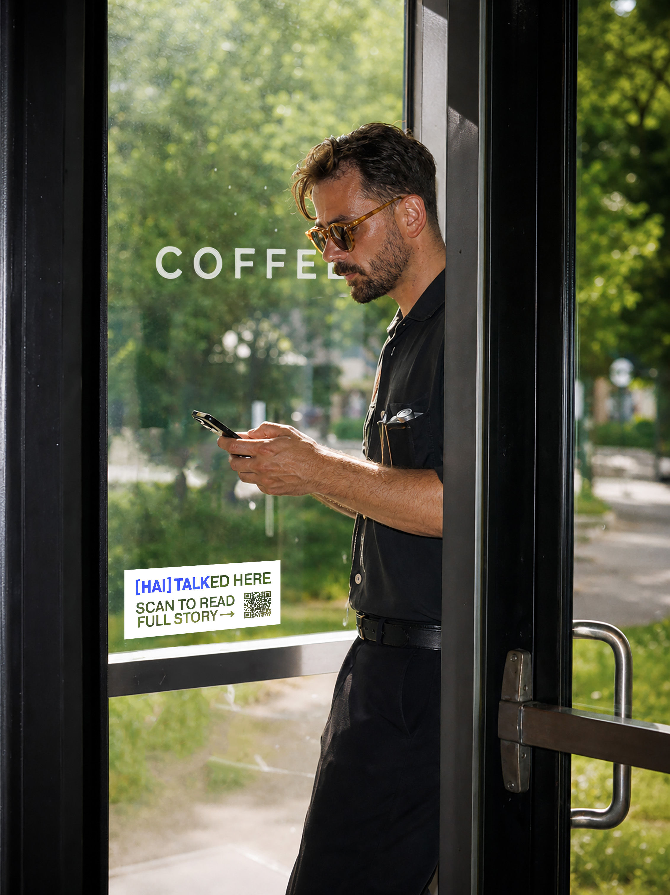
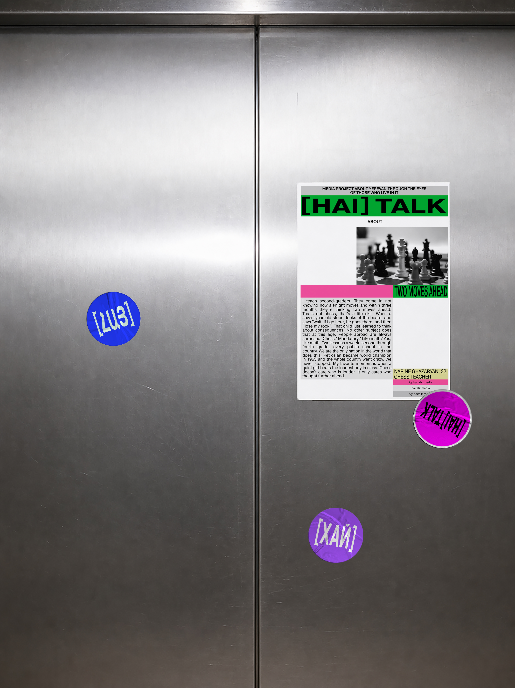
Результат
В результате была разработана концепция городского медиа с собственным редакционным методом, визуальным языком и системой носителей.
[HAI] TALK не пытается составить исчерпывающий портрет Еревана. Проект показывает, что город существует в рассказах людей — иногда противоречивых, субъективных и незаметных по отдельности. Соединяясь, они создают картину, которую невозможно получить из одного путеводителя или одного экспертного комментария.
Outcome
The result is a concept for an urban media platform with its own editorial method, visual language, and system of physical and digital touchpoints.
[HAI] TALK does not attempt to create a definitive portrait of Yerevan. Instead, it shows how the city exists through the stories of its people—sometimes contradictory, subjective, and easy to overlook in isolation. Together, these voices form a picture that no single guidebook or expert perspective could provide.
COVER — концепция дизайнерского бренда одежды, построенного вокруг тайны и недосказанности. Его вещи не стремятся показать всё сразу: утончённый силуэт, многослойность и скрытые детали оставляют пространство для интерпретации. Одежда частично закрывает тело, но не прячет человека. Напротив, она смещает внимание с очевидного на индивидуальность, внутреннюю силу и способ самовыражения.
Бренд обращается к людям, которым близок язык высокой моды, но не её недоступность. COVER переносит дизайнерский подход в более открытую ценовую категорию и позволяет широкой аудитории стать частью модной культуры без необходимости соответствовать её традиционной исключительности.
COVER is a conceptual fashion brand built around mystery and restraint. Its garments never reveal everything at once. Refined silhouettes, layered construction, and concealed details leave room for interpretation.
The clothes partially cover the body without hiding the person wearing them. Instead, they shift attention away from the obvious and toward individuality, presence, and inner strength.
COVER speaks to people who are drawn to the language of high fashion but excluded by its price and traditional sense of exclusivity. The brand brings a designer-led approach to a more accessible market, opening the door to fashion as a space for personal expression.
В основе проекта лежит идея современного fashion-бренда, соединяющего концептуальность дизайнерской одежды с доступностью повседневного гардероба. COVER должен был восприниматься выразительно и самобытно, но не дистанцироваться от покупателя чрезмерной элитарностью.
Задачей стало создание визуальной идентичности и упаковочной системы, которые могли бы передать характер одежды ещё до знакомства с коллекцией. Все точки контакта — от логотипа до материала упаковки — должны были говорить на одном языке: что-то скрывать, оставлять след и постепенно раскрывать детали.
Context
The project began with the idea of creating a contemporary fashion label that could combine the conceptual depth of designer clothing with the accessibility of an everyday wardrobe. COVER needed to feel distinctive and considered without becoming distant or overly exclusive. Its identity and packaging had to communicate the character of the clothing before the customer ever tried it on. Every touchpoint—from the wordmark to the packaging materials—was shaped by the same principle: conceal part of the form, leave a trace, and reveal the rest gradually.
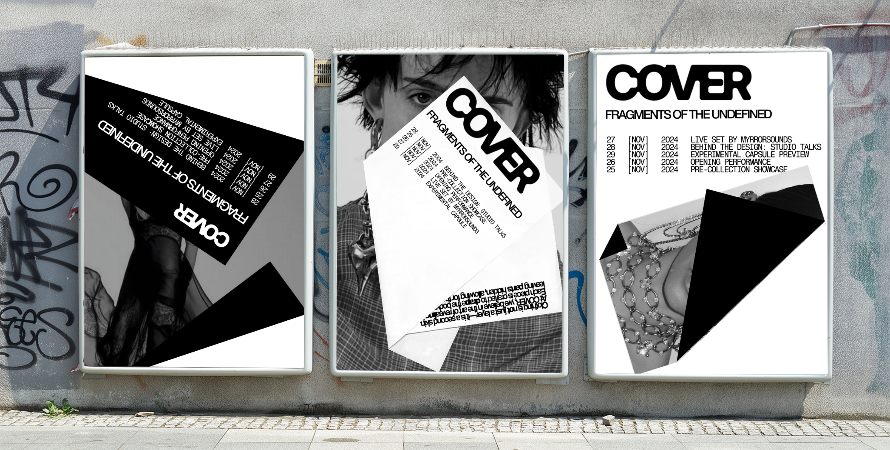
Название
Название COVER стало отправной точкой всей системы. В контексте бренда оно получает более глубокий смысл: одежда становится границей между человеком и внешним миром — своеобразной второй кожей, которая не маскирует личность, а помогает проявить её на собственных условиях.
Образ камня дополняет эту метафору. До вмешательства мастера его поверхность скрывает будущую форму. Скульптура появляется постепенно, через точные отсечения и внимание к материалу. Так и вещи COVER не диктуют готовый образ, а дают человеку основу, из которой он может выстроить собственный.
Name
The name COVER became the starting point for the entire visual system. Within the brand, it takes on a deeper meaning: clothing becomes a boundary between the individual and the outside world—a second skin that doesn’t conceal identity, but allows it to emerge on its own terms.
The image of a raw stone extends this metaphor. Before the sculptor begins, its surface holds a form waiting to be revealed. The sculpture emerges gradually through precise cuts and a close understanding of the material. COVER works in much the same way: rather than prescribing a finished look, its garments provide a foundation from which each person can shape their own.
Логотип
Логотип построен на массивном гротеске, словно частично накрытом тканью. Воображаемый материал проходит поверх букв, давит на их контуры и создаёт локальные деформации. Слово остаётся читаемым, но перестаёт быть нейтральной типографикой.
Искажение работает как правило, а не декоративный эффект. Оно возникает только в местах предполагаемого наложения ткани и показывает взаимодействие двух сред: устойчивой типографической основы и подвижного материала. Благодаря этому знак можно развивать в динамике, графике и композициях, меняя положение «покрывающего» слоя, но сохраняя узнаваемый принцип.
Wordmark
The wordmark is built around a bold grotesque typeface that appears to be partially draped in fabric. An imagined layer passes over the letters, pressing into their contours and creating subtle, localized distortions. The word remains legible, but the typography no longer feels neutral or static.
The distortion functions as a system rather than a decorative effect. It appears only where the fabric is imagined to overlap the letterforms, capturing the interaction between a solid typographic structure and a soft, shifting material. This principle allows the wordmark to evolve across motion, graphics, and compositions: the position of the covering layer can change while the underlying visual logic remains recognizable.
Визуальная система
Визуальная система продолжает логику частичного раскрытия. Изображения могут перекрываться полупрозрачными слоями, кадрироваться или появляться фрагментами. Крупные планы ткани, швов, фактур и конструктивных элементов становятся важнее буквальной демонстрации полного образа.
Главным выразительным инструментом становится контролируемое сокрытие: - фрагмент вместо полного изображения - фактура вместо декоративного паттерна - деформация вместо дополнительного символа - слой вместо плоской поверхности - деталь вместо прямого высказывания.
Visual System
The visual system follows the same logic of partial reveal. Images can be obscured by translucent layers, tightly cropped, or shown only in fragments. Close-up views of fabric, seams, textures, and construction details take precedence over showing a complete look.
Controlled concealment becomes the brand’s primary expressive device: - fragments rather than complete images; - texture rather than decorative pattern; - distortion rather than an additional symbol; - layers rather than flat surfaces; - details rather than explicit statements.
Упаковка
Упаковка COVER продолжает идею одежды как второго слоя кожи. Она защищает изделие, повторяет его форму и делает материал главным участником взаимодействия.
Для системы выбраны переработанные материалы, формованная окрашенная пульпа и многоразовые вакуумные пакеты. Пульпа создаёт прочную рельефную оболочку с естественной неоднородной фактурой. Вакуумный пакет, напротив, плотно облегает изделие и подчёркивает поверхность ткани, складки и конструкцию вещи. Скрытый внутри продукт остаётся визуально ощутимым — его нельзя увидеть полностью, но можно прочитать через контур и материал.
Сжатая упаковка уменьшает занимаемый объём и может использоваться повторно для хранения и транспортировки одежды.
Packaging
COVER’s packaging extends the idea of clothing as a second skin. It protects the garment, conforms to its shape, and makes the material itself central to the experience.
The system uses recycled materials, dyed molded pulp, and reusable vacuum bags. The molded pulp forms a durable, sculpted shell with a naturally irregular texture. In contrast, the vacuum bag wraps tightly around the garment, drawing attention to the fabric’s surface, folds, and construction. Though concealed inside, the piece retains a visible presence: it cannot be seen in full, but its form can be read through its contours and material.
The compressed packaging reduces storage volume and can be reused to store or transport clothing.
Распаковка строится как постепенное раскрытие. Покупатель снимает один слой за другим, приближаясь к вещи через фактуру, форму и тактильный контакт. Упаковка не предвосхищает продукт яркой декоративностью — она создаёт момент ожидания и усиливает ценность того, что находится внутри.
The unboxing experience unfolds as a gradual reveal. The customer removes each layer in turn, discovering the garment through texture, form, and touch. Rather than competing with the product through bold decoration, the packaging creates a sense of anticipation and heightens the value of what lies within.
Результатом стала концепция бренда, в которой название, одежда, логотип и упаковка подчинены одному принципу. COVER не использует тайну как отвлечённый образ: она проявляется в деформации букв, наложении слоёв, фрагментарной подаче и способе упаковки изделия. Узнаваемость может возникать не из добавления новых знаков, а из одного точно сформулированного правила. В случае COVER таким правилом стало наложение: скрывая часть формы, оно помогает увидеть её острее.
The result is a brand concept in which the name, clothing, wordmark, and packaging all follow a single principle. For COVER, mystery is more than an abstract idea—it takes shape through distorted letterforms, overlapping layers, fragmented imagery, and the way each garment is packaged. Recognition does not always require more symbols. It can grow from one clearly defined rule. For COVER, that rule is overlap: by concealing part of the form, the identity brings the rest into sharper focus.
UNDERDOG — концепция независимого арт-пространства для авторов, чьи работы не вписываются в привычные категории.
Пространство задумано как точка встречи для художников, перформеров и других независимых авторов. Здесь можно свободно экспериментировать, показывать незавершённые работы, находить единомышленников, обмениваться идеями и развиваться без необходимости делать своё искусство более удобным для аудитории.
Название UNDERDOG переосмысляет положение аутсайдера. Внутри сообщества оно перестаёт быть обозначением слабости и становится общей идентичностью.
UNDERDOG is a concept for an independent art space dedicated to artists whose work resists conventional categories.
Conceived as a meeting point for visual artists, performers, and other independent creatives, it offers a place to experiment freely, share unfinished work, find like-minded people, exchange ideas, and grow without having to make art more palatable to an audience.
The name UNDERDOG reclaims the position of the outsider. Within the community, it no longer signals weakness—it becomes a shared identity.
Традиционная реклама культурных событий старается заранее объяснить зрителю, что он увидит и как это следует воспринимать. Для UNDERDOG такой подход противоречил бы самой идее пространства. Плакаты должны были вызывать реакцию до того, как становился понятен их смысл, и оставлять место для интерпретации.
Вместо единого шаблона я разработала три самостоятельные серии плакатов. У каждой своя функция, степень визуальной интенсивности и способ взаимодействия со зрителем.
Traditional advertising for cultural events tends to tell audiences in advance what they are about to see and how they should interpret it. For UNDERDOG, that approach would contradict the very idea of the space. The posters needed to provoke a response before their meaning became clear, leaving room for personal interpretation.
Rather than relying on a single template, I developed three distinct poster series. Each serves a different purpose, uses its own level of visual intensity, and creates a different kind of encounter with the viewer.
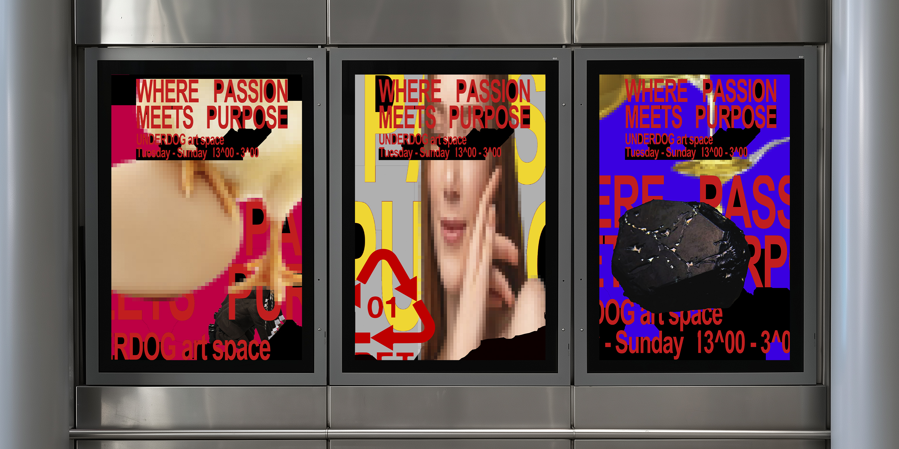
1. Красота абсурда
Первая серия формирует характер пространства. UNDERDOG — громкий, импульсивный и намеренно неудобный.
Плакаты построены на столкновении изображений, между которыми нет логической связи: пикселизированных портретов, найденных предметов, животных, повторяющихся человеческих фигур и обрывков цифровой графики. Они не складываются в последовательный сюжет. Смысл возникает через ассоциации, конфликт и абсурд.
1. The Beauty of Absurdity
The first series establishes the character of the space. UNDERDOG is loud, impulsive, and deliberately confrontational.
The posters collide images with no obvious logical connection: pixelated portraits, found objects, animals, repeated human figures, and fragments of digital graphics. Rather than forming a linear narrative, they generate meaning through association, tension, and absurdity.
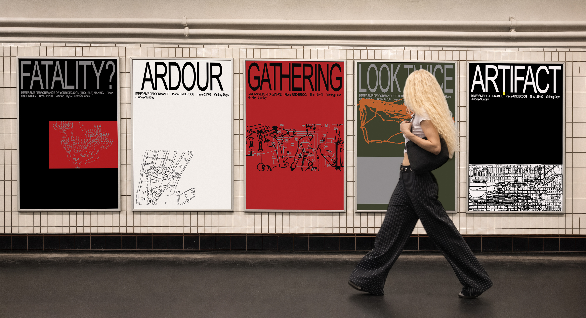
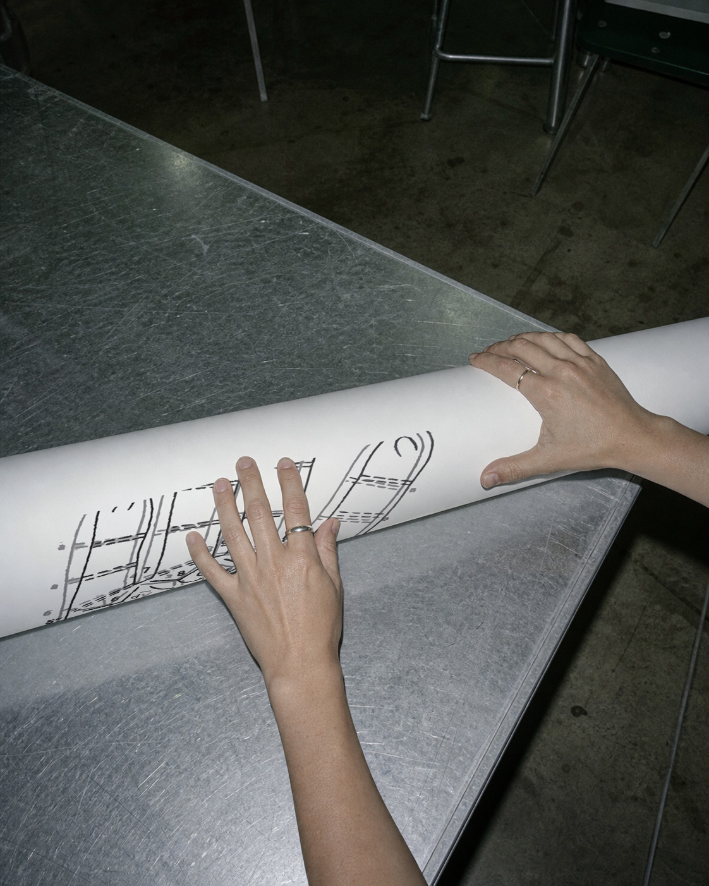
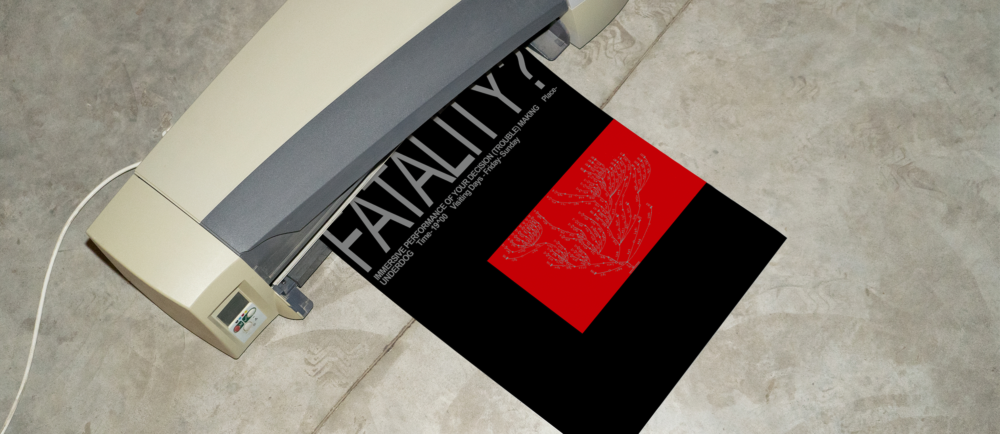
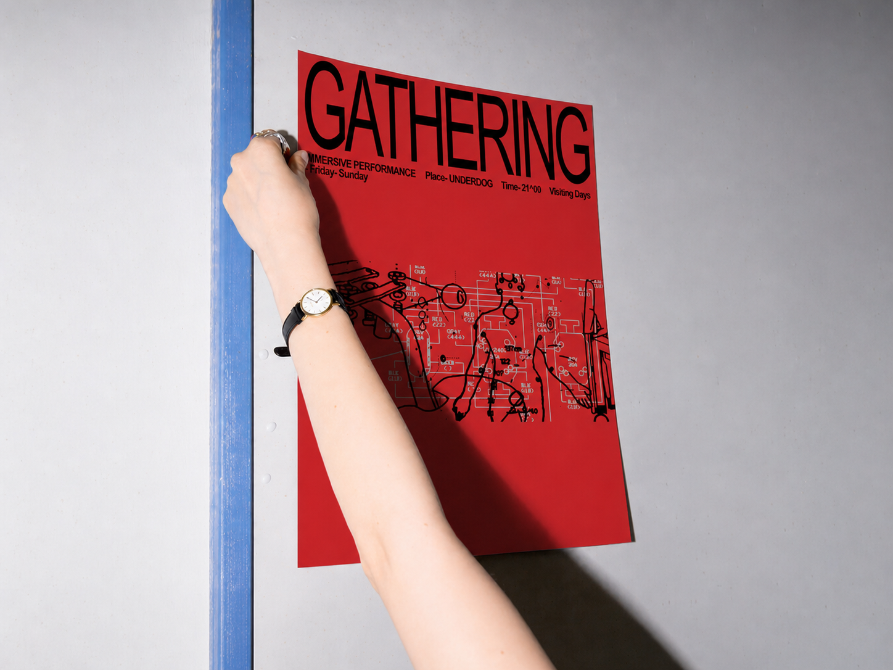
2. Иммерсивные спектакли
Вторая серия анонсирует программу иммерсивных спектаклей. Здесь визуальный язык становится сдержаннее, а напряжение возникает из пустоты и недосказанности.
Каждый плакат строится вокруг фрагментарного образа. Анатомические схемы, технические чертежи и неопределённые структуры выглядят как подсказки, значение которых можно понять только внутри спектакля. Плакаты создают ожидание опыта, который невозможно получить со стороны.
2. Immersive Performances
The second series promotes a program of immersive performances. Here, the visual language becomes more restrained, with tension emerging through negative space and ambiguity.
Each poster is built around a fragmented image. Anatomical diagrams, technical drawings, and unfamiliar structures act as clues whose meaning can only be understood from within the performance. Rather than revealing the experience in advance, the posters create anticipation for something that cannot be fully grasped from the outside.
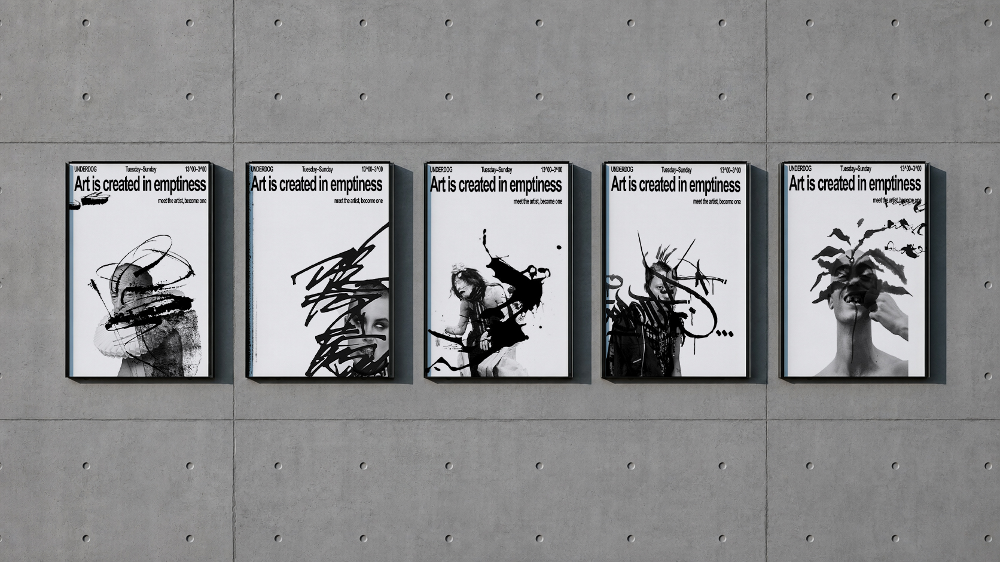
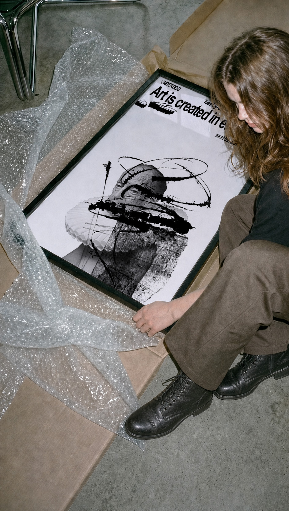
3. Сделать авторов видимыми
Третья серия посвящена художникам, которые стоят за сообществом. Личность художника раскрывается через созданный им визуальный язык. В композициях появляется много пустого пространства. Оно напоминает об отсутствии аудитории, но одновременно воспринимается как свободное поле, в котором может возникнуть новое высказывание.
Фраза «Art is created in emptiness» связывает одиночество творческого процесса с его потенциалом. Дополнительное обращение «Meet the artist, become one» разрушает привычную дистанцию между автором и зрителем: аудитории предлагают стать участником, а не наблюдателем.
3. Making Artists Visible
The third series focuses on the artists behind the community. Rather than relying on conventional portraiture, it reveals each artist through the visual language they create.
The compositions use generous negative space. It suggests the absence of an audience, yet also becomes an open field where a new statement can take shape.
The phrase “Art is created in emptiness” connects the solitude of the creative process with its potential. A second invitation—“Meet the artist, become one”—breaks down the familiar distance between artist and viewer, asking the audience to participate rather than simply observe.
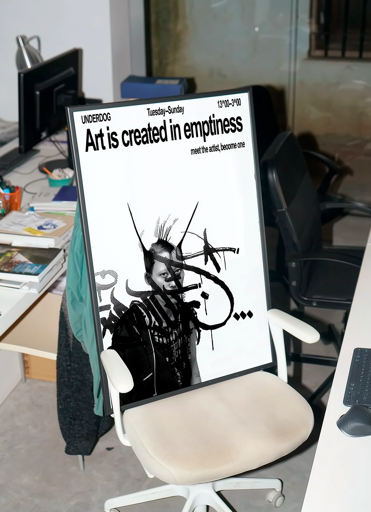
Три серии показывают UNDERDOG с разных сторон: как культурную позицию, сообщество авторов и площадку для экспериментальных событий.
Проект исследует, насколько разными могут быть голоса внутри одной идентичности. Их цельность строится не на одинаковом шаблоне, а на общем отношении к коммуникации: не объяснять искусство заранее, не сглаживать противоречия и не лишать зрителя возможности увидеть собственный смысл.
The three series present UNDERDOG from different perspectives: as a cultural stance, a community of artists, and a platform for experimental events.
The project explores how distinct voices can coexist within a single identity. Its cohesion does not come from a shared template, but from a common approach to communication: resisting the urge to explain art in advance, preserving its contradictions, and leaving viewers free to find their own meaning.


.png)